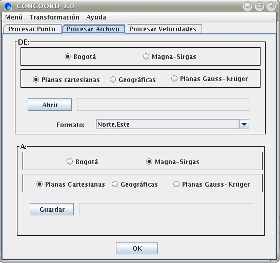

Procesamiento de Archivos
El procesamiento de archivos permite al usuario convertir o
transformar las coordenadas (geográficas, planas cartesianas
o planas Gauss-Krüger) de un conjunto de puntos contenidos en
un archivo de texto plano y asociados a alguno de los dos sistemas de
referencia utilizados en Colombia (Datum BOGOTÁ,
MAGNA-SIRGAS).
El formato de los archivos aceptados por CONCOORD puede ser:
- Para coordenadas planas cartesianas o planas
Gauss-Krüger:
- Norte,Este
- Identificador,Norte,Este
- Identificador,Norte,Este,Altura
- Este,Norte
- Identificador,Este,Norte
- Identificador,Este,Norte,Altura
- Para coordenadas geográficas:
- Latitud,Longitud
- Identificador,Latitud,Longitud
- Identificador,Latitud,Longitud,Altura
- Longitud,Latitud
- Identificador,Longitud,Latitud
- Identificador,Longitud,Latitud,Altura
Importante:
- Debe identificarse claramente, tanto en los valores de
entrada, como en los de salida, el tipo de coordenadas y su marco de
referencia
- Las coordenadas contenidas en el archivo de entrada deben
ser de un sólo tipo (o planas cartesianas, o planas
Gauss-Krüger o geográficas), no es posible la
combinación de diferentes tipos de coordenadas en un mismo
archivo.
- Los puntos contenidos en el archivo de entrada deben estar
definidos sobre un único sistema de referencia (o Datum
BOGOTÁ, o MAGNA-SIRGAS),
no es posible la combinación de coordenadas referidas a
diferentes datum en un mismo archivo.
- Las coordenadas planas (cartesianas o
Gauss-Krüger) deben estar asociadas a un único
origen de proyección, no es posible la
combinación de coordenadas planas asociadas a diferentes
orígenes de proyección en un mismo archivo. Si el
archivo de entrada contiene coordenadas geográficas y se
requieren planas Gauss-Krüger, seleccionando la
opción "Automático", cada punto será
calculado en el origen Gauss-Krüger correspondiente.
- Las coordenadas planas cartesianas, las planas
Gauss-Krüger y la altura deben expresarse en metros.
- El formato de las coordenadas geográficas
corresponde con GG.MMSSSSS, por ejemplo, la latitud 4°
15´ 12,355" debe introducirse como 4.1512355. Debe
anteponerse el signo menos [-] a las latitudes SUR.
- El programa asume todos los valores dados en la longitud
como OESTE
- El separador decimal siempre es el punto [.].
- El separador entre el identificador del punto, las
coordenadas y la altura dentro del archivo de texto siempre es la coma
[,].
- Los archivos de entrada no deben tener encabezado, la
primera línea corresponde a las coordenadas del primer punto
contenido en el archivo.
- En los archivos de salida se mantiene el formato del
archivo de entrada, incluyéndose en la primera
línea un encabezado con la secuencia de los campos
correspondientes.
- Si no está disponible la altura de los puntos
incluidos en el archivo de entrada y, aún así se
prefiere el uso del Modelo Molodensky-Badekas, debe indicarse un valor
de altura aproximado para cada uno de los puntos; de lo contrario, CONCOORD
adelanta una transformación bidimensional por defecto.
- Las coordenadas transformadas contienen una sola cifra
decimal, dadas las limitaciones de precisión presentes en
cualquier método de transformación de datum. Las
alturas niveladas no se transforman.

DE: Origén de los datos
- Debe seleccionar uno de los dos Datums y un tipo de
coordenada, de acuerdo a el origen
de sus datos.
- Debe abrir el archivo de texto plano, separado por comas y
extensión *.txt o *.csv.
- Debe seleccionar el formato interno del archivo:
- Para coordenadas Planas Cartesianas y Planas
Gauss-Krüger:
- Norte, Este
- id, Norte, Este
- id, Norte, Este, Altura
- Este, Norte
- id, Este, Norte
- id, Este, Norte, Altura
- Para coordenadas Geográficas:
- Latitud, Longitud
- id, Latitud, Longitud
- id, Latitud, Longitud, Altura
- Longitud, Latitud
- id, Longitud, Latitud
- id, Longitud, Latitud, Altura
A: Destino de los datos
- Debe seleccionar uno de los dos Datums y un tipo de
coordenada, de acuerdo al destino
de sus datos.
- Debe crear el archivo de texto plano, donde desea guardar
los datos procesados.
TIPO DE DATUM
- BOGOTA, Datum
geodésico horizontal, adoptado en 1941, cuyo elipsoide
asociado corresponde con el Internacional de 1924 y cuyo punto datum se
localizó en el Observatorio Astronomico de
Bogotá, de aquí su nombre.
- MAGNA-SIRGAS, (Marco Geocéntrico
Nacional de Referencia), Datum
geodésico geocéntrico, cuyo elipsoide asociado
coincide con la nueva definición del WGS84(G1150),
introducida a partir del 1 de enero de 2000 (Merrigan et al. 2002).
TIPO DE COORDENADAS
Debe seleccionar uno de los tres tipos de coordenadas:
- PLANAS CARTESIANAS, El sistema
de proyección cartesiana equivale a una
representación conforme del elipsoide sobre un plano
tangente que roza al elipsoide en un punto origen
[φ0, λ0]. La proyección del
meridiano que pasa por este punto representa el eje de la coordenada
Norte. No obstante, los puntos sobre el elipsoide y los equivalentes
proyectados sobre el plano no tienen una relación
geométrica, ésta es puramente
matemática. La proyección cartesiana es utilizada
para la elaboración de planos de ciudades (cartografia a
escalas mayores que 1:5000), de alli, existen tantos
orígenes de coordenadas cartesianas como ciudades o
municipios. EL plano de proyección se define sobre la
altitud media de la comarca a representar.
- GEOGRAFICAS, Arcos
o ángulos que fijan con precisión la
posición que un punto que ocupa sobre la superficie de la
Tierra, en valores de latitud y longitud
- PLANAS GAUSS-KRÜGER,
Es la
proyección cartográfica oficial de Colombia, el
origén principal de las coordenadas Gauss-Krüger se
definió en la pilastra sur del Observatorio
Astronómico
de Bogotá, asignándose los valores N = 1 000 000
m y E =
1 000 000 m.
Si el archivo contiene una gran cantidad
de puntos, se despliega un dialogo con una barra de estado indicando el
procesamiento de los datos, al terminar se informa que el proceso ha
concluido.
CONCOORD ©
2005 Acueducto Agua y
Alcantarillado de Bogotá - ESP